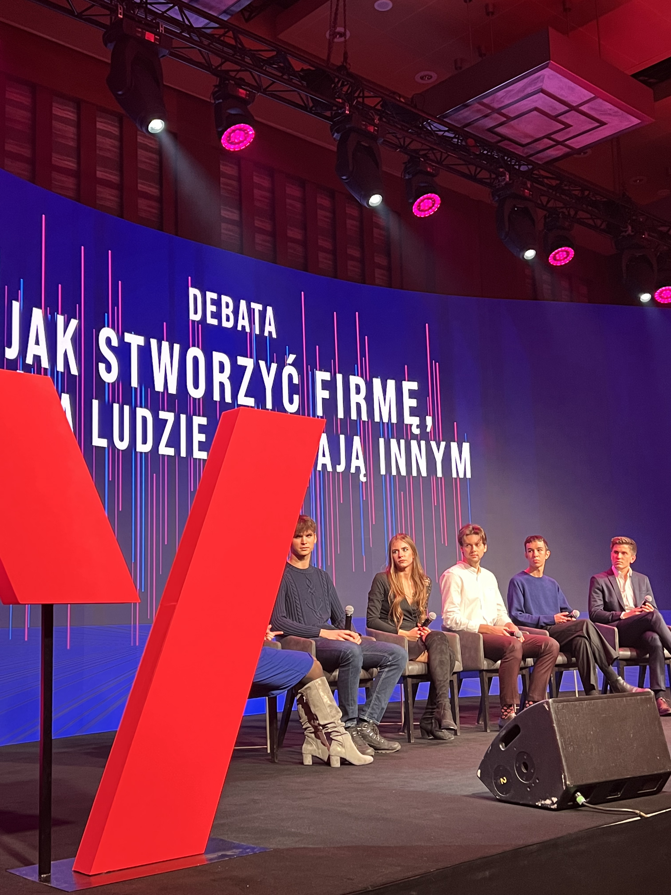

In this section you can learn about my professional life
Experience
As a Data Scientist at Alcon, I play a crucial role in the development and implementation of software and algorithms for a large-scale project involving over 40 team members. My key responsibilities include:
- Data Management: Scraping, cleaning, and structuring data, followed by integration into a cloud database (AWS). I create and maintain accessible tables to ensure seamless data availability for the entire team.
- Analytical Insights: Conducting comprehensive sales and product functionality analyses, along with creating visualizations to monitor and report on key performance indicators (KPIs).
- Product Development: Leading the development of our primary product, a sophisticated recommendation algorithm, and building various machine learning models to support the overall project.
- Application Maintenance: Ensuring the smooth operation of the application in the production environment, including bug fixing and batch management.
- Scrum Participation: Actively engaging in Scrum ceremonies, presenting results, and collaborating with stakeholders to drive project success.
- Mentorship and Support: Providing guidance and support to less experienced team members, fostering a collaborative and growth-oriented environment.
At mBank, I had the chance to encounter big data for the first time, as I was part of the team that was in charge of the data warehouse. As a team, we checked the quality of the data, created the views needed for business applications, and controlled the data flow.
At the time, I was keen to develop in the direction of classical data science, so I repeatedly took the initiative to develop ML models to help us with data control and credit forecasting. I then found a slightly more experienced person in the team to start working with. Due to my then only training experience, I started working with the Data Science department, which led us to develop two models that were released for use.
These models are probably still in use today and help predict monthly credit scores. mBank was a valuable experience because there I learned how to build relationships with people so as to lead them towards a common goal, which in this case was to do something new for the department.
At Leanpassion, in my role as a business consultant, I learned an extraordinary amount about organisation and saving resources. Leanpassion, as the name suggests, deals with business transformations based on Lean Management.
In a nutshell, the transformations I have dealt with can be broken down into a few steps:
- Goal setting during discussions with project sponsors from the client side.
- Long-term observation and identification of problems in the designated workplace or business process.
- Prioritisation of proposed changes during discussions with sponsors and process participants.
- Leading during the first moments of change
In addition to this, part of my work has also been to provide training for Lean Green Belt certification. In order to be able to conduct these, I first had to become certified myself.
I have acted for large clients such as IKEA of Sweden, OBI, OBI IT, BNP Paribas, and Auchan. I definitely mastered customer relationship building and project management during this time.
Education
Bechelor's degree, Global business, finance and governance
Master's degree, Advanced Analytics – Big Data
Recommendations
"Jan is a great asset to the team. He has a solid understanding of project processes and can think ahead to anticipate potential problems. He always completes tasks on time, even if they are difficult. During discussions he provides detailed information and gives clear summaries. He can handle difficult tasks independently and adapts well to new situations and challenges. No matter what comes in his way, he stays calm and professional. His ability to make rational decisions and communicate clearly is impressive."
QA Specialist, ISC Project
"Jan has joined the project a year ago and has been showing steady growth as a professional. While there were some mistakes made at the beginning, I must say that currently from my perspective, Jan is working independently, always shows initiative and easily establishes good communication within the team to resolve day to day issues. In my opinion it shows great improvement and great potential of Jan as a specialist. I think Jan fits the team very well, on both personal and professional levels."
Product Owner, ISC Project
Project Portfolio
Impactful Sales Call (ISC)
Description: The ISC project is one of the main technology projects at Alcon. It involves the creation of a tool that helps plan visits for sales representatives and advises on what action should be taken with specific customers and when. The application exists as an add-on to Salesforce for Alcon's use only.
Technologies Used: AWS services: Athena, S3, Batch, SageMaker and more | Python - Pandas, Numpy, TensorFlow, Matplotlib, Scikit-Learn and more | SQL
Role & Contribution: As Data Scientist on this project, I was responsible for scraping data, working with databases, building and maintaining recommendation algorithms, running analyses and building ML models.
Shadow mode project (My main private project)
Description: In the team of three that I have built, we are creating a platform with job offers that aims to be the first choice for people of our generation. For now, the project is in development, but I'm looking forward to sharing what we prepare.
Technologies Used: Microsoft Azure | GPT API | Python | HTML | CSS | JavaScript
Role & Contribution: I am a co-founder of this project. From the beginning, I developed the idea from both the business and technology side. I am currently involved in product development, while I am also involved in branding, meetings with potential investors, market research, product design and many other activities.
My Personal Website (still under development)
Description: The page you are currently reading. It is my public biggest web development project. I learned web development mainly to be able to work on the project above.
Technologies Used: HTML | CSS | JavaScript
Other
The three projects above are my current main projects. In addition to these, I have also completed a number of minor projects which can be found on my GitHub (link at the top of the page). The ML projects I mentioned when discussing ISC include:
- Market Basket Analysis - Based on historical customer transactions using association algorithms, I researched which products sell best together and then used this to sell.
- Account Potential - On the basis of all available customer data, using regression and classification algorithms, I estimated the resale potential of customers.
- ISC Analysis - Using regression after detailed analysis, I predicted sales for the selected timeframe.
Achievements
-
Human Focused Learning: While working as a business consultant, I received an invitation to a Human Focused Learning conference organised by Leanovatica as a participant in a debate on Generation Z entering the labour market. The conference was watched live by around 300 people and another 300 people online. I consider this event an achievement, because the speakers at this conference were really recognisable people such as Marcin Prokop, Vital Heynen or Maciej Noga, and on top of that, in my opinion, I presented myself really well.
 -
Brilliant Team Award: Team and I managed to achieve the 'Brilliant Team' award in the first quarter of 2024, which is given to the best team across the company for special achievements. We received this award for developing the app and the ML models around it to such an extent that it has become the second most important project at Alcon.

Courses, Trainings, Certifications
- Lean Green Belt certification, issued by Leanpassion
- Project Management Principles certification, issued by Project Management Institute